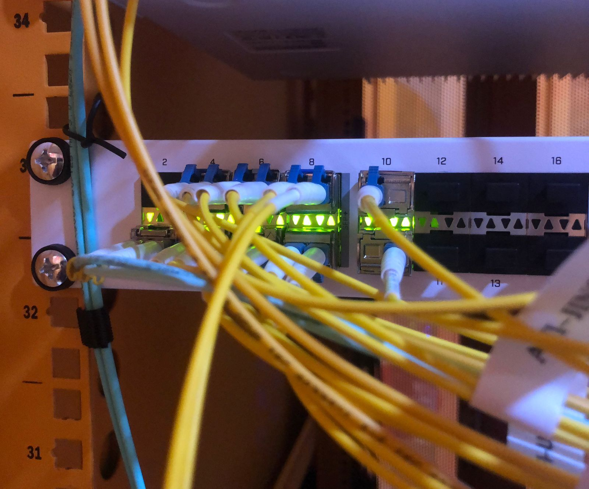
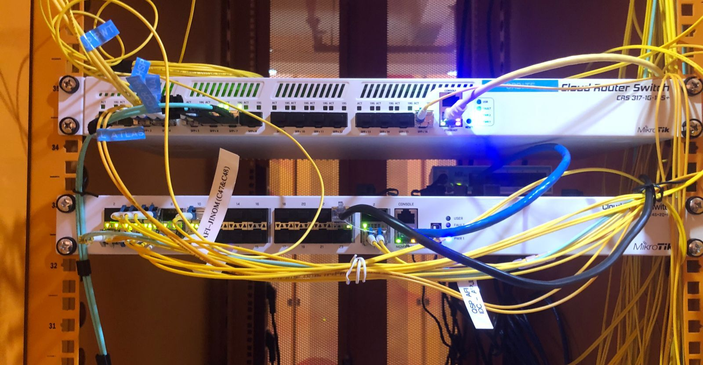

Saya adalah seorang yang memiliki ketertarikan dalam bidang Networking dalam lingkup jaringan LAN maupun WAN, dan saya merupakan seorang yang selalu ingin berkembang dan berusaha untuk maju dalam hal apapun saya mampu bekerja secara individual maupun secara tim.
Memiliki pengalaman kerja selama 3 tahun sebagai Network Operation Center (NOC) di dua perusahaan berbeda mampu berkoordinasi dengan baik untuk menyelesaikan tugas secara efektif
| Data | Keterangan |
|---|---|
| Nama | Ilham Saefullah |
| Umur | 21 Tahun |
| Status | Belum Menikah |
| Alamat | Kota Bekasi, Jawa Barat |
| Tahun | Sekolah/Universitas |
|---|---|
| 2020 - 2023 | SMK Negeri 2 Kota Bekasi Teknik Komputer dan Jaringan |
| 2025 - Sekarang | Universitas Siber Asia S1 Informatika |
Selama 1 tahun 6 bulan bekerja di PT Ikhlas Cipta Teknologi sebagai Network Operation Center (NOC).saya bertanggung jawab dalam monitoring performa jaringandan selama sistem kerja shifting 24/7.Berpengalaman dalam melakukan troubleshooting gangguan,membuat laporan ticket incident,serta terlibat langsung dalam kegiatan maintenance di data center untuk memastikan stabilitas dan keandalan sistem jaringan perusahaan.
Di PT Cyberplus Media Pratama bekerja sebagai Network Operation Center, Bekerja secara shifting, bertanggung jawab dalam memonitoring jaringan, Menangani gangguan, Responsif terhadap Client, dan juga penanganan Ticketing.

